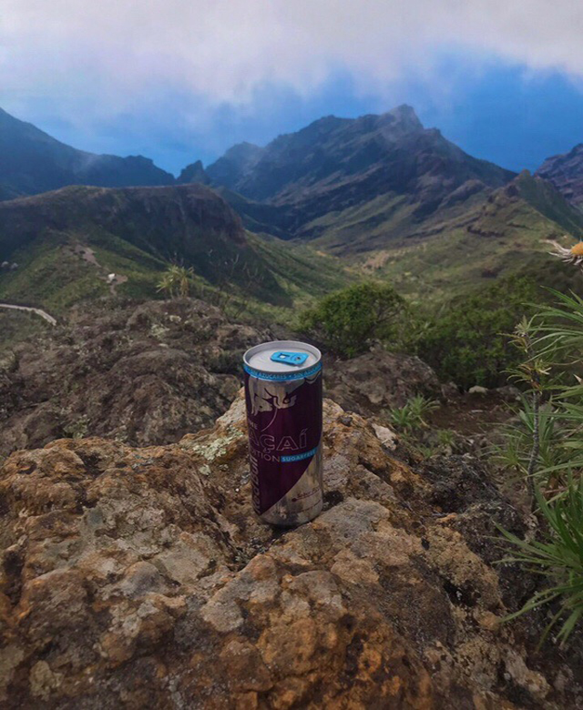
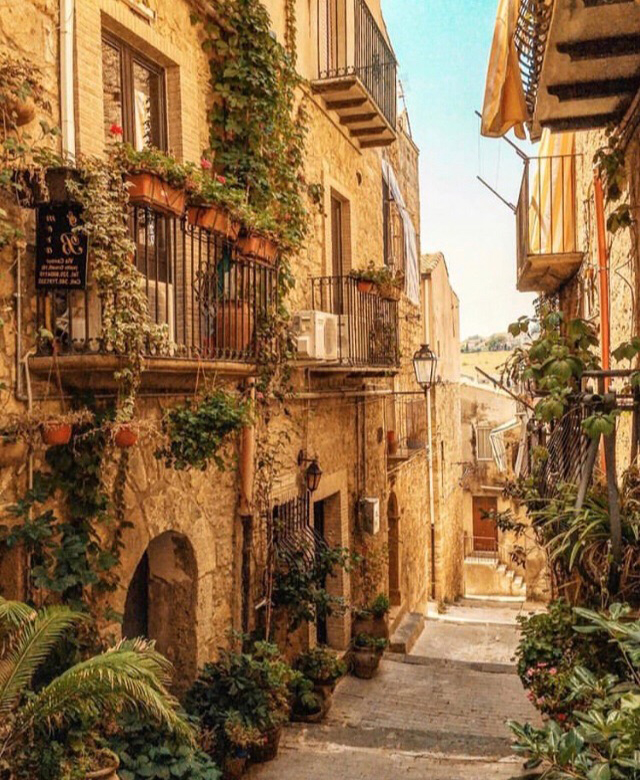

|
Remember, Air companies will always try to offer you something expensive.
- To search for tickets, it’s not enough just to look carefully for them, you need to understand how the airlines work. Therefore, read on the Internet information about the airlines themselves and other search engines, study the scheme for receiving money, etc.
- IP address tracking. It may seem ridiculous to you, but such things really count. Always get your tickets incognito.
- Try not to refresh the page while buying tickets.
- On different operating systems Mac, Android, Windows - prices will be different.
- When you see the inscription "Only 1 place left" - do not pay attention to this, this is one of the tricks of the airlines.
- The more you sit on the site, study the reservation conditions and click on the link from the link, the higher the price.
- The best time to search for tickets is on Tuesday, Wednesday night, 1-2 hours of the night. The price may depend on the time of day, hour, location and even on the development of your country.
|
 |
 |